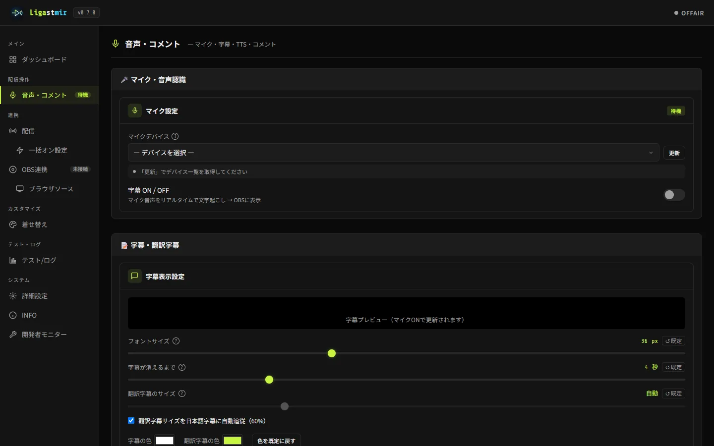

Twitch / YouTube のコメントを読み上げる方法
Ligastmir（無料）を使うと、配信のコメントを音声合成で自動読み上げできます。
ゲームに集中していてもコメントを聞き逃さず、視聴者の「読まれた！」も生まれます。
声は Windows標準（準備なし）／VOICEVOX（ずんだもん等のキャラ声）／棒読みちゃん（既存設定のまま）の3系統から選べます。
実際の設定画面

声は3系統から選べます
🪟 Windows標準（SAPI5）
追加インストール不要。今すぐ使えます。まず試すならこれ。
🟢 VOICEVOX
ずんだもん等のキャラ声（無料）。自動起動を設定すれば、Ligastmirと一緒に立ち上がります。クレジット表記も自動生成。
📢 棒読みちゃん
既にお使いなら本体を起動して選ぶだけ。読み方辞書・声・速度はそのまま使えます。
最短手順（4ステップ）
読み上げの声を選ぶ「音声・コメント」ページで音声エンジンを選択。VOICEVOX は「自動検出」でパスを見つけて自動起動をONにできます。
配信チャンネルに接続する「配信」ページで Twitch のチャンネル名を入れて「接続」（匿名でOK・登録不要）。YouTube は配信URLとAPIキーで接続します。
コメントが読み上げられる音量・話者・読み上げ前のお知らせ音は同じページで調整。設定は自動保存されます。
読み上げを「良い感じ」にする機能
- 読み上げ辞書 — 固有名詞やスタンプの読み方を登録。チャットの
!教育コマンドでも登録できます。 - NGワード・NGユーザー — 読ませたくない語・ユーザーをスキップ。
- 名前の読み上げ方 — 「○○さん」を付ける/付けない等を選べます。
- 音量の正規化・読み上げ前のお知らせ音 — 音量の暴れを抑え、読み上げ開始が分かる音を鳴らせます。
- 翻訳読み上げ — 海外コメントは日本語訳を読み上げ（翻訳機能と連動）。
うまくいかないとき
声が出ない
Windowsの音量・出力先デバイスを確認。VOICEVOX の声なら VOICEVOX 本体が起動しているか確認してください。→ 使い方 ④コメント読み上げ
VOICEVOX が起動しない／エラーになる
本体のパス設定（自動検出）を確認。GPUモードは対応GPUが無い環境ではエラーになるのでCPUモードに。→ こんな時は
読み上げが遅れる
賑やかな時間帯の順番待ちか、合成の重さが原因のことが多いです。軽いエンジンに替える・電源プランを見直す等の対処があります。→ FAQ